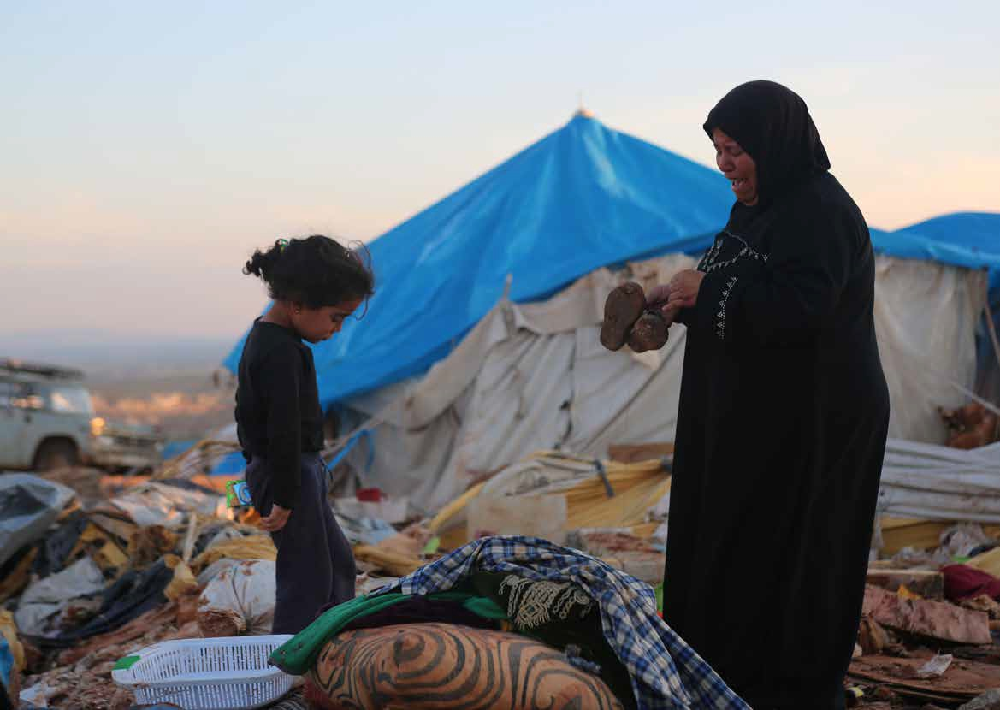

Kamouna, Syria. 5 May, 2016. A mother cries as she looks at the remains of her family tent with the shoes of one of her children in her hands. Her family were killed in the refugee camp aircraft attack. She lost her husband and four of her children. Three other children were badly injured. The air attack, where at least 70 people are reported to have been killed, was in rebel-held northern Syria. This is close to the Turkish border near Sarmada in Idlib. It has not been confirmed whether the attack was by Syrian or Russian warplanes, but activists, civilians and aircraft surveillance said to Images Live that the bombardment was by the Russians. The attack came just a day after the temporary truce agreed between Syrian military and non-jihadi rebel forces was instigated around Aleppo.